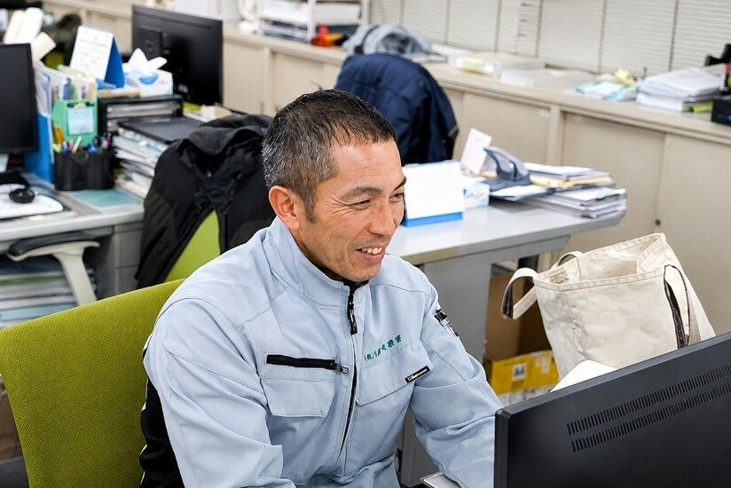

1974 / TODAY / NEXT
この街とともに、50年以上。
信頼をつなぎ、次の時代へ。
ガス管取替後の復旧舗装工事や水道・土木工事。1974年から積み重ねた仕事と、人を大切にする会社づくり。久留米興業の歩みと、これからを紹介します。
- ガス管取替後の復旧舗装工事
- 水道工事
- 一般土木工事
- 下水道工事
SINCE 1974会社の歩み
守ってきた仕事が、
今の街につながる。
世田谷で半世紀以上、道路や水道に関わる工事に取り組んできた久留米興業。長く続く仕事の背景には、地域・取引先・社員とのつながりがあります。
1974年設立
道路・水道などの工事を、世田谷を拠点に続けてきました。

現在の職場
事務所と現場、それぞれの役割を持つ社員が働いています。

A PERSONAL POINT OF VIEW代表の経験
経験したから、
変えたいことがある。
現場の経験
- 18歳
- 現場に入る
- 24歳
- 一度会社を離れる

経営と会社づくり
- その後
- 現場・管理・経営を経験
18歳で現場に入り、24歳で一度会社を離れた川島代表。現場と管理、そして経営を経験してきたからこそ、仕事を続ける人の負担や働き方にも目を向けています。
WORK IN PROGRESS守ること・変えること
仕事の価値は守る。
働き方は、見直し続ける。
勤務時間の管理、負担を分ける人員配置、異なる個性の尊重。現場の厳しさも残るからこそ、会社づくりは完成形ではありません。
守りたいこと
- インフラを支える仕事
- 取引先との信頼
- 仲間との連携

見直してきたこと
- 時間の管理定時を意識し、残業時間を管理することから働き方を見直してきました。
- 人員の配置一人だけに無理を集中させず、人を増やして負担を分ける考え方に取り組んできました。
- 個性の尊重得意なことや仕事の進め方が違っても、同じ目標へ進める関係を大切にしています。

現場には今も忙しい日や、休憩に余裕を感じにくい日があります。取り組みは途中です。
会社の未来を見る4 BUSINESS FIELDS事業
社会に必要な工事を、
毎日の現場で。
道路を元の状態に戻し、地域の水道・下水道や土木の仕事に携わる。仕事の形は異なっても、その先には利用する人の生活があります。
- 01
 ガス管取替後の復旧舗装工事
ガス管取替後の復旧舗装工事ガス管取替後の道路を舗装復旧する工事。
- 02
 水道工事
水道工事水道管の布設・布設替など、供給基盤に関わる工事。
- 03
 一般土木工事
一般土木工事道路の維持・改良など、地域の土木工事。
- 04下水道工事
下水道整備など、生活基盤に関わる工事。

工事の先には、その道や水道を使う人の毎日があります。
PEOPLE ARE THE STORY社員の声
会社を語るのは、
そこで働く人たち。
異業種から営業に転職した人、長年現場を支えてきた人、建築から土木へ移った人。それぞれ違う経歴と視点から、久留米興業の実像が見えてきます。
 営業職根岸さんお茶の営業から転職。公共工事の現場調整と資格取得を経て、現場代理人へ。記事を読む ↗（外部サイトが開きます）
営業職根岸さんお茶の営業から転職。公共工事の現場調整と資格取得を経て、現場代理人へ。記事を読む ↗（外部サイトが開きます） 営業職高畑さん新卒・土木未経験で入社。先輩の仕事に同行しながら、現場の知識を増やしてきた。記事を読む ↗（外部サイトが開きます）
営業職高畑さん新卒・土木未経験で入社。先輩の仕事に同行しながら、現場の知識を増やしてきた。記事を読む ↗（外部サイトが開きます） 営業職今井さん広告業界から転職。現場の職人との対話を重ねて、調整の進め方を身につけてきた。記事を読む ↗（外部サイトが開きます）
営業職今井さん広告業界から転職。現場の職人との対話を重ねて、調整の進め方を身につけてきた。記事を読む ↗（外部サイトが開きます）現場職の二人の対談
長年の現場経験から、役割分担と、新人に少しずつ覚えてほしいという考えを話しています。
建築から土木へ。先輩に聞きながら仕事を覚え、暑さや時間の厳しさも率直に話しています。
お二人の本人写真は掲載していません。対談の要約です。
NEXT 50 YEARSこれから
続けていくために、
変わっていく。
次の世代に仕事をつなぎ、経験や技術を伝え、働く人にとって続けられる会社へ。実施してきたことと、これから整えたいことの両方をお伝えします。
工事を、次の世代へ。
現場で培った技術と経験を、新しく加わる人へ渡していくことを目指しています。

育成と環境を、整えていく。
教える側の余裕や仕組みがまだ十分でないことも認識し、教え方と働き方を見直していく考えです。

CAREER CHOICES採用情報
自分の役割を、
ここから見つける。
会社の考え方に共感できたら、働く現実も確かめてください。営業職と現場職それぞれの仕事、経験の積み方、待遇や募集条件を採用ページで説明しています。


WORK / PEOPLE / REALITY実際の仕事と人
言葉だけでなく、
現場と人の実像を。
会社の歩みや考え方は、実際の仕事や社員の話に表れます。現場写真と公開インタビューを通して、久留米興業の日常をご覧ください。